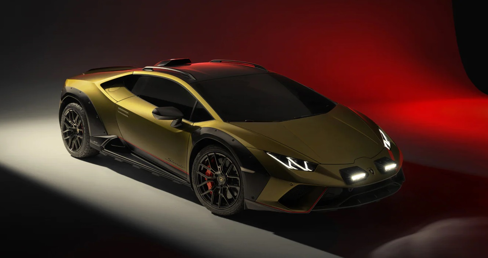
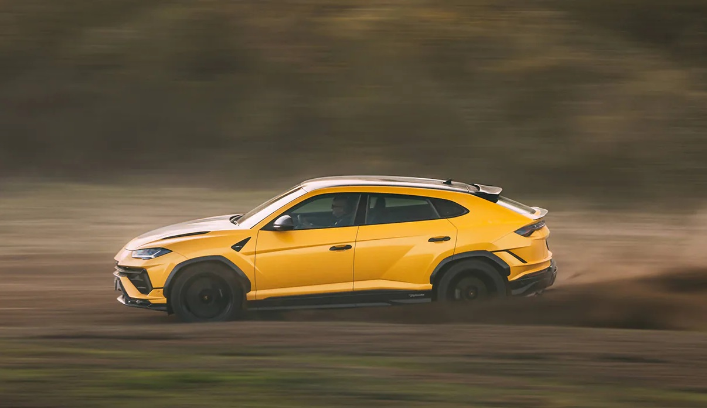

El Revuelto es el comienzo de una nueva era para Lamborghini, que ha aprovechado el poder de la tecnología de hibridación para crear el primer HPEV
(vehículo eléctrico de alto rendimiento). Respondiendo a la necesidad de sostenibilidad y potencia de rendimiento, el Lamborghini Revuelto reescribe todos los paradigmas y representa una obra maestra técnica que va más allá de la imaginación de cualquiera.
El icónico motor V12 encuentra una nueva vida en esta obra maestra automovilística futurista que ofrece un rendimiento y unas emociones al volante inigualables.
Lamborghini Huracan
De nuestro pasado hemos aprendido a la perfección. Así nació el primer modelo de Lamborghini Huracán.
Aún más prestaciones, aún más control, aún más innovación.
El Huracán, con su motor V10 y la tecnología más avanzada, es capaz de ofrecer una experiencia de conducción extraordinaria.
Diseñado para garantizar las mejores prestaciones y ser controlable en cualquier situación de conducción, es fácil de llevar al límite y extremadamente emocionante,
gracias a tecnologías como el cambio Lamborghini Doppia Frizione (LDF) y el sistema de tracción total con control electrónico.


Lamborghini Urus
El Lamborghini Urus es el primer vehículo utilitario superdeportivo del mundo en el que el lujo,
el carácter deportivo y las prestaciones van de la mano del confort y la versatilidad, garantizando la mejor dinámica de conducción de su categoría y
un diseño con una elegancia inconfundible. El Urus aúna las características de múltiples espíritus: deportivo, elegante y off-road.
Perfecto para la conducción de todos los días en cualquier ámbito. El raspante rugido del motor y
las elevadas prestaciones convierten al Lamborghini Urus en un coche sorprendente.